KRK-Panel
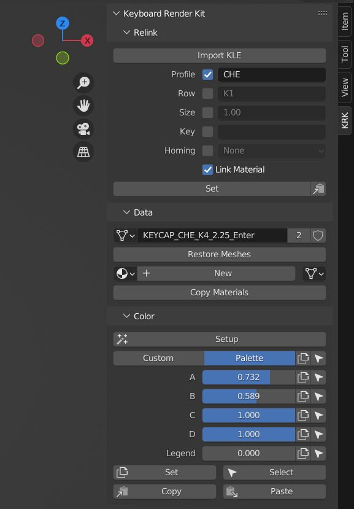
Das KRK-Panel befindet sich in der Seitenleiste (N) und ist in vier Bereiche unterteilt: Relink, Data, Color und Properties. Die letzten beiden sind nur sichtbar, wenn die entsprechenden Eigenschaften verfügbar sind.
Relink
Relink ist ein Objektdaten-Manager, mit dem Sie schnell zwischen Keycap-Profilen, Zeilen, Größen, Tasten und Homing-Optionen wechseln können. Jede Option, bei der das Kontrollkästchen aktiviert ist, wird berücksichtigt, wenn Sie auf die Schaltfläche Set klicken.
Import KLE
KRK kann JSON-Dateien des Keyboard Layout Editor importieren. KLE benennt seine Objekte nicht, daher versucht der Importer, die Tasten anhand der Beschriftung und der Zeile (K1-K6) zu interpretieren, und setzt wo möglich einen Platzhalter. Verwenden Sie dieses KLE als Beispiel oder als Grundlage, um Ihr eigenes zu erstellen:
http://www.keyboard-layout-editor.com/#/gists/f7528ebe1348daab7abc45bc2f662c8a
Profile
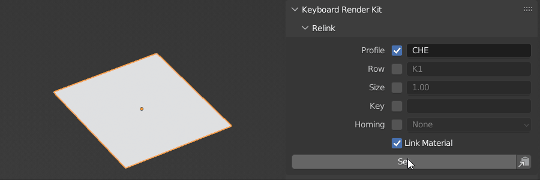
Die verfügbaren Profile und ihre Präfixe sind in der Sammlung Profile im Outliner aufgeführt; für Zeilen und andere Optionen entwickeln Sie mit der Zeit ein Gefühl. Geben Sie die Option in das entsprechende Feld ein (Groß-/Kleinschreibung beachten), aktivieren Sie das Kontrollkästchen und klicken Sie auf Set, um die Option zu setzen.
Zeile
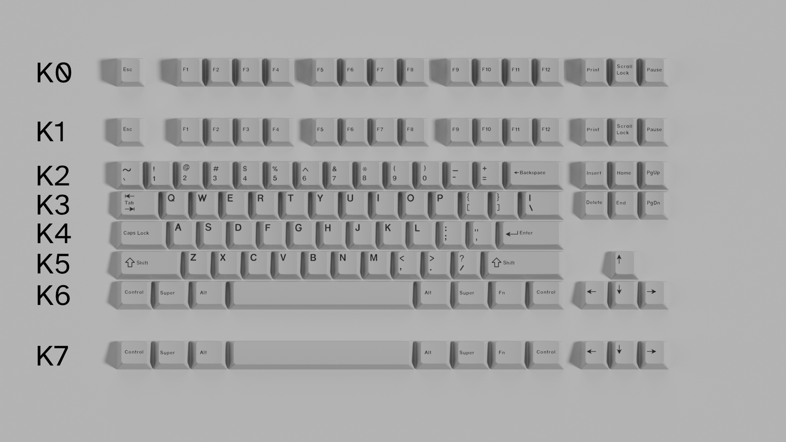
Da verschiedene Hersteller und Keycap-Profile unterschiedliche Zeilennummerierungssysteme verwenden, führt KRK ein weiteres ein, das auf der tatsächlichen Position auf der Tastatur von hinten ausgehend basiert.
Profile |
Optional |
Zeilen |
Optional |
|---|---|---|---|
KRK |
0 |
1-2-3-4-5-6 |
7 |
Cherry |
0 |
1-1-2-3-4-4 |
5 |
DCS |
5 |
1-1-2-3-4-4 |
|
DSA |
Uniform |
||
DSS |
1-1-2-3-4-3 |
4 |
|
KAM |
Uniform |
||
KAT |
5 |
4-4-3-2-1-1 |
|
OEM |
1-1-2-3-4-4 |
||
SA |
1-1-2-3-4-3 |
4 |
Bei einigen Profilen sind die erste und/oder letzte Zeile austauschbar.
(Uniform in der Tabelle bedeutet, dass alle Zeilen die gleiche Höhe haben; geben Sie es unverändert ein.)
Size
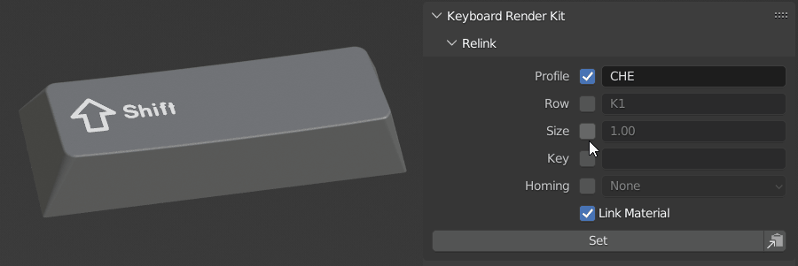
Sie können die Größe eines Keycaps ändern, indem Sie die vierstellige Einheitengröße in das Feld eingeben. Wenn die Zielgeometrie verfügbar ist, wird sie auf die gewünschte Größe geändert.
Key
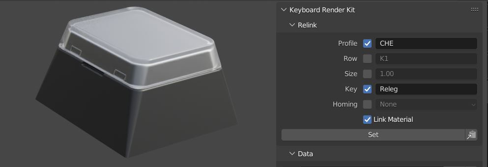
Geben Sie den Keycap-Namen in das Feld ein, um Keycaps gegen einen anderen Keycap auszutauschen. Dies ist praktisch, um zu einem Keycap mit austauschbarer Beschriftung (Releg), einem unbeschrifteten Keycap (Blank) oder einem mit Fenster (*_WIN) zu wechseln.
Homing
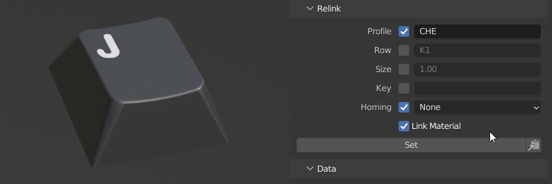
Sie können den Typ der Homing-Taste zwischen Bar/Nub/Scoop ändern, indem Sie dieses Dropdown-Menü verwenden und auf Set klicken.
Link Material
Link Material ist eine Option, mit der Sie das aktuell angewendete Material auf die Ziel-Objektdaten übertragen können. Je nach gewünschtem Ergebnis möchten Sie diese Option möglicherweise ein- oder ausschalten. Wenn Sie beispielsweise zum Platzhalter-Profil (PLA) wechseln, sollten Sie die Option Link Material ausschalten, damit das Capsmat nicht auf die Platzhalter übertragen wird.
Copy Settings
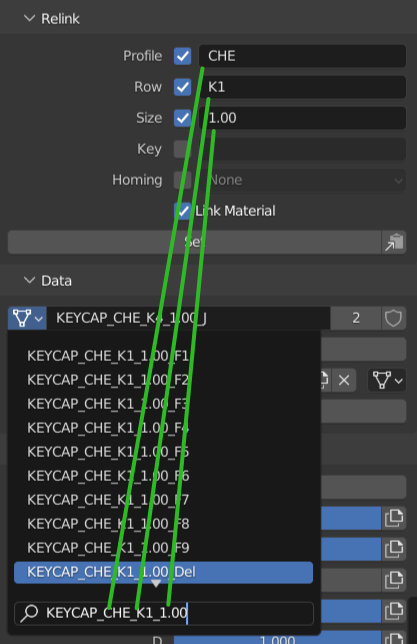
Rechts neben der Schaltfläche Set befindet sich die Schaltfläche Copy Settings. Sie hilft Ihnen, den Namen der Objektdaten in das Dropdown-Menü für Objektdaten zu kopieren, um die Suche nach einer bestimmten Taste zu erleichtern.
Die folgenden Bereiche zeigen nur Optionen für das aktive (hervorgehobene) Objekt an.
Data
Data spiegelt die Bereiche für Objektdaten und Materialzuweisung aus dem Eigenschaften-Panel wider, um den Zugriff zu erleichtern.
Durchsuchen Sie die Objektdaten einfach, um die aktiven Objektdaten durch andere zu ersetzen. Z. B. duplizieren oder instanziieren Sie einen Keycap und machen Sie die Kopie zu einem Switch oder Stabilisator.
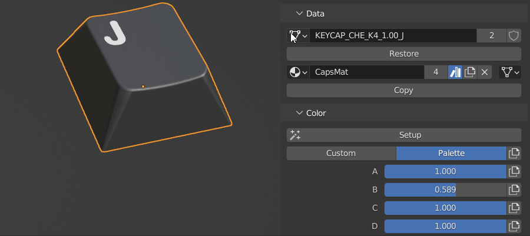
Restore Meshes kann verwendet werden, wenn ein Keycap nicht neu verknüpft werden kann, weil es dupliziert, importiert oder eingefügt wurde. Es verbindet es mit der gleichnamigen Version wieder, die bereits in der Datei vorhanden ist. Wenn Sie das importierte als Basis verwenden möchten, benennen Sie dessen Objektdaten so um, dass am Ende nicht .001 steht.
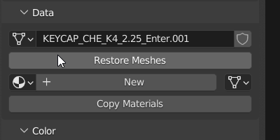
Restore Collections erscheint nur, wenn ein Sammlungs-Asset ausgewählt ist. Damit können Sie es in einen bearbeitbaren Zustand zurückversetzen.
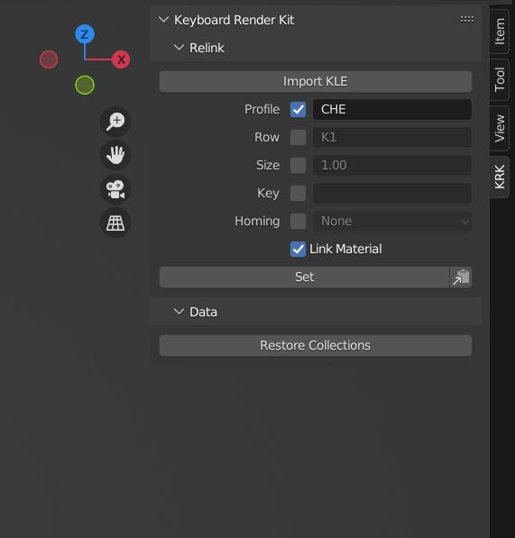
Die Schaltfläche Copy hier verknüpft das Material vom aktiven Keycap-Objekt mit allen anderen ausgewählten Keycaps und ignoriert dabei Nicht-Keycap-Objekte.
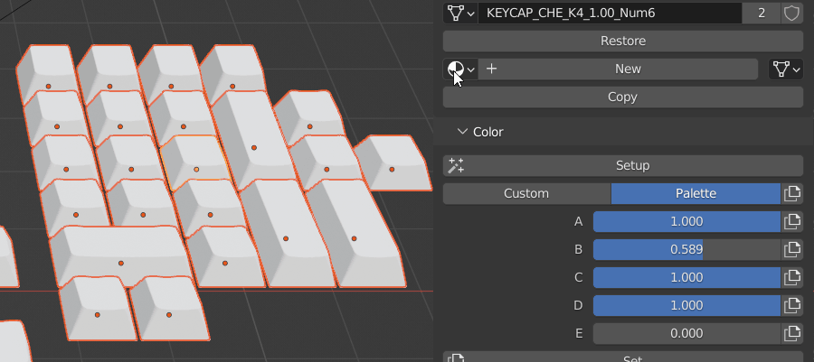
Color
Color ist ein Farb- und Palettenverwaltungssystem, mit dem Sie die Farbaspekte Ihres Capsmats steuern können. Es wird nur angezeigt, wenn Farb-Eigenschaften verfügbar sind. Wenn Sie einen Keycap ausgewählt haben, der keine Farb-Eigenschaften enthält, ist die Schaltfläche Setup verfügbar, um alle erforderlichen Eigenschaften auf das Keycap-Objekt anzuwenden.
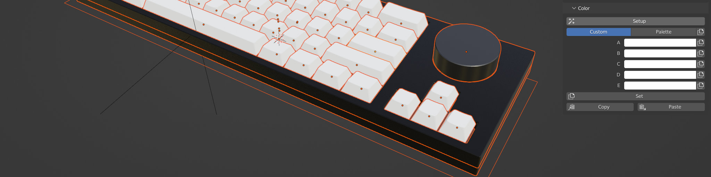
Mit dem Umschalter Custom/Palette können Sie zwischen den Workflows für benutzerdefinierte Farben und Paletten wechseln. Die Farben A-E und die Palette-Regler A-E ermöglichen es Ihnen, diese Aspekte des Capsmats objektbezogen über die Palette-Node-Gruppen zu steuern. Wählen Sie Ihre Optionen und drücken Sie Set, um sie auf alle ausgewählten Keycap-Objekte zu übertragen, oder drücken Sie die einzelnen Kopierschaltflächen, um es auf jeweils eine Option zu beschränken. Die Schaltflächen Copy und Paste befinden sich unten, um einen Index von Optionen für alle ausgewählten Objekte zu erstellen und abzurufen.
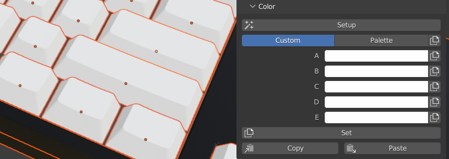
Properties
Properties ist ebenfalls nur sichtbar, wenn benutzerdefinierte Eigenschaften verfügbar sind. Bei den USB-Kabeln werden die Kabeloptionen wie Braid/Techflex und die Schrumpfschlauchfarbe für die Enden angezeigt. Wenn die Deskmat ausgewählt ist, werden stattdessen die Abmessungs- und Randeinfassungsoptionen angezeigt.
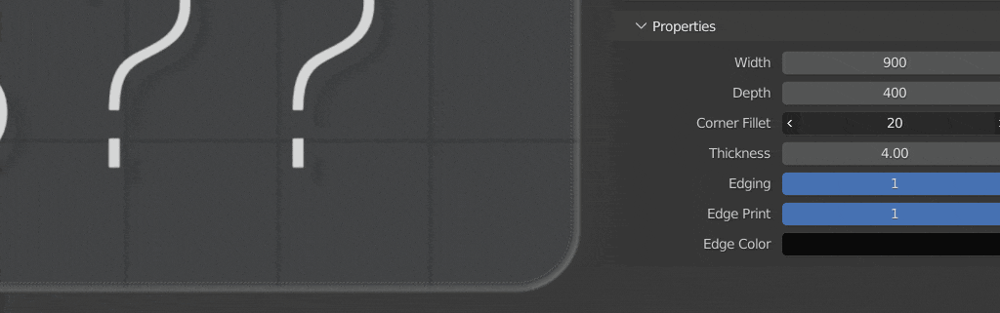